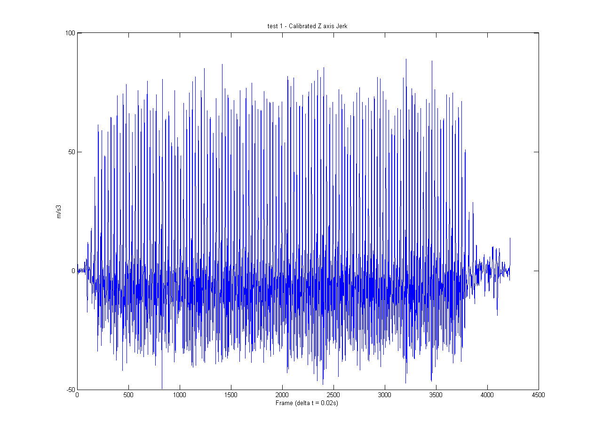

Contents
Clearing of previous data
clear all
clc
Selection of .csv file and the useful data
[FileName,PathName] = uigetfile({'*'},'Load Turn File');
[pathstr, name, ext] = fileparts(FileName);
delimiter = ',';
FileName = fullfile(PathName,[name ext]);
formatSpec = '%f%f%f%f%f%f%f%*s%*s%[^\n\r]';
fileID = fopen(FileName,'r');
dataArray = textscan(fileID, formatSpec, 'Delimiter', delimiter, 'EmptyValue' ,NaN, 'ReturnOnError', false);
fclose(fileID);
raw_data = [dataArray{:, 2} dataArray{:, 3} dataArray{:, 4} dataArray{:, 5} dataArray{:, 6} dataArray{:, 7}];
calibrated_data = Calibrate04008(raw_data);
Calibration of data
raw_accel = [raw_data(:, 1) raw_data(:, 2) raw_data(:, 3)];
raw_gyro = [raw_data(:, 4) raw_data(:, 5) raw_data(:, 6)];
cal_accel = [calibrated_data(:, 1) calibrated_data(:, 2) calibrated_data(:, 3)];
cal_gyro = [calibrated_data(:, 4) calibrated_data(:, 5) calibrated_data(:, 6)];
Sizing of Graphs
max_y_axis = 25;
max_x_axis = size(cal_accel,1);
max_gyro_axis = 3;
Calibrated accel and gyro graphs
figure('name',strcat(name,' - Calibrated 3 axis acceleration'));
plot(cal_accel);
xlabel('Frame (delta t = 0.02s)');
ylabel('g');
axis([0 ,max_x_axis,-1.5,1.5]);
title (strcat(name,' - Calibrated 3 axis acceleration'));
legend('X Axis', 'Y Axis', 'Z Axis');
figure('name',strcat(name,' - Calibrated 3 axis gyro'));
plot(cal_gyro);
xlabel('Frame (delta t = 0.02s)');
ylabel('Rad/s');
axis([0 ,max_x_axis,-max_gyro_axis,max_gyro_axis]);
title (strcat(name,' - Calibrated 3 axis gyro'));
legend('X Axis', 'Y Axis', 'Z Axis');
Calculation producing the normalised accelerations
normx = (cal_accel(:,1)+1)*9.81+0.15;
normy = cal_accel(:,2)*9.81;
normz = (cal_accel(:,3))*9.81;
gyrox = cal_gyro(:,1);
gyroy = cal_gyro(:,2);
gyroz = cal_gyro(:,3);
Frequency and time step calculations
Fs = 50;
T = 1/Fs;
Fast fourier transform
L = max_x_axis;
NFFT = 2^nextpow2(L);
Y = fft(normx,NFFT)/L;
f = Fs/2*linspace(0,1,NFFT/2+1);
figure;
plot(f,2*abs(Y(1:NFFT/2+1)))
title('Single-Sided Amplitude Spectrum of y(t)')
xlabel('Frequency (Hz)')
ylabel('|Y(f)|')
Filter
for n = 1:length(normx)
sample_num (n) = n;
end
sample_num = sample_num'; fc = 5;
wn = (fc/Fs)*2*pi;
[sample_num,normx] = butter(20,wn);
filterx= normx;
filterx = butterworthLowV1(normx, 1,50, 5);
filtery = butterworthLowV1(normy, 1,50, 5);
filterz = butterworthLowV1(normz, 1,50, 5);
Checking of fliter effect
L = max_x_axis;
NFFT = 2^nextpow2(L);
Y = fft(filterx,NFFT)/L;
f = Fs/2*linspace(0,1,NFFT/2+1);
figure;
plot(f,2*abs(Y(1:NFFT/2+1)))
title('Single-Sided Amplitude Spectrum of y(t)')
xlabel('Frequency (Hz)')
ylabel('|Y(f)|')
figure('name',strcat(name,' - Calibrated and Filtered X axis acceleration'),'units','normalized','outerposition',[0 0 1 1]);
plot(filterx);
hold on
plot(normx)
xlabel('Frame (delta t = 0.02s)');
ylabel('m/s2');
axis([0 ,max_x_axis,-max_y_axis,max_y_axis]);
title (strcat(name,' - Filtered, Calibrated & Normalised X axis acceleration'));
figure('name',strcat(name,' - Calibrated and Filtered Y axis acceleration'),'units','normalized','outerposition',[0 0 1 1]);
plot(filtery);
xlabel('Frame (delta t = 0.02s)');
ylabel('m/s2');
axis([0 ,max_x_axis,-max_y_axis,max_y_axis]);
title (strcat(name,' - Calibrated Y axis acceleration'));
figure('name',strcat(name,' - Calibrated and Filtered Z axis acceleration'),'units','normalized','outerposition',[0 0 1 1]);
plot(filterz);
xlabel('Frame (delta t = 0.02s)');
ylabel('m/s2');
axis([0 ,max_x_axis,-max_y_axis,max_y_axis]);
title (strcat(name,' - Calibrated Z axis acceleration'));

Calculating Jerk
for n = 1 : (length(normx)-1)
jerkx(n) = (filterx(n+1)-filterx(n))/T;
if jerkx(n)>17
step(n)= 1;
else
step(n) = 0;
end
jerky(n) = (filtery(n+1)-filtery(n))/T;
jerkz(n) = (filterz(n+1)-filterz(n))/T;
end
jerkx = jerkx';
jerky = jerky';
jerkz = jerkz';
steps = sum(step);
Jerk Plots
figure('name',strcat(name,' - Calibrate X axis Jerk'),'units','normalized','outerposition',[0 0 1 1]);
plot(jerkx);
xlabel('Frame (delta t = 0.02s)');
ylabel('m/s3');
title (strcat(name,' - Calibrated X axis Jerk'));
figure('name',strcat(name,' - Calibrate Y axis Jerk'),'units','normalized','outerposition',[0 0 1 1]);
plot(jerky);
xlabel('Frame (delta t = 0.02s)');
ylabel('m/s3');
title (strcat(name,' - Calibrated Y axis Jerk'));
figure('name',strcat(name,' - Calibrate Z axis Jerk'),'units','normalized','outerposition',[0 0 1 1]);
plot(jerkz);
xlabel('Frame (delta t = 0.02s)');
ylabel('m/s3');
title (strcat(name,' - Calibrated Z axis Jerk'));

Gyroscope Plots
figure('name',strcat(name,' - Calibrated X axis gyro'),'units','normalized','outerposition',[0 0 1 1]);
plot(gyrox);
xlabel('Frame (delta t = 0.02s)');
ylabel('Rad/s');
axis([0 ,max_x_axis,-max_gyro_axis,max_gyro_axis]);
title (strcat(name,' - Calibrated X axis gyro'));
figure('name',strcat(name,' - Calibrated Y axis gyro'),'units','normalized','outerposition',[0 0 1 1]);
plot(gyroy);
xlabel('Frame (delta t = 0.02s)');
ylabel('Rad/s');
axis([0 ,max_x_axis,-max_gyro_axis,max_gyro_axis]);
title (strcat(name,' - Calibrated Y axis gyro'));
figure('name',strcat(name,' - Calibrated Z axis gyro'),'units','normalized','outerposition',[0 0 1 1]);
plot(gyroz);
xlabel('Frame (delta t = 0.02s)');
ylabel('Rad/s');
axis([0 ,max_x_axis,-max_gyro_axis,max_gyro_axis]);
title (strcat(name,' - Calibrated Z axis gyro'));
Calculating anglular displacement
anglex = 0;
angley = 0;
anglez = 0;
for n = 1: (length(gyrox)-1)
x_angle =((gyrox(n)+ gyrox(n+1))/2)*T;
anglex(n+1) = anglex(n) + x_angle;
y_angle =((gyroy(n)+ gyroy(n+1))/2)*T;
angley(n+1) = angley(n) + y_angle;
z_angle =((gyroz(n)+ gyroz(n+1))/2)*T;
anglez(n+1) = anglez(n) + z_angle;
end
anglex = (anglex') * 180/pi;
angley = (angley') * 180/pi;
anglez = (anglez') * 180/pi;
y1 = ones(length(anglex),1);
y90 = y1*90;
y180 = y1*180;
y270 = y1*270;
Plotting of angular displacement
figure('name',strcat(name,' - Calibrated X axis angular dsiplacement'),'units','normalized','outerposition',[0 0 1 1]);
plot(anglex);
hold on
plot(y180);
plot(y90);
plot(y270);
xlabel('Frame (delta t = 0.02s)');
ylabel('Degrees');
title (strcat(name,' - Calibrated X axis angular displacement'));
figure('name',strcat(name,' - Calibrated Y axis angular displacement'),'units','normalized','outerposition',[0 0 1 1]);
plot(angley);
xlabel('Frame (delta t = 0.02s)');
ylabel('Degrees');
title (strcat(name,' - Calibrated Y axis angular displacement'));
figure('name',strcat(name,' - Calibrated Z axis angular displacement'),'units','normalized','outerposition',[0 0 1 1]);
plot(anglez);
xlabel('Frame (delta t = 0.02s)');
ylabel('Degrees');
title (strcat(name,' - Calibrated Z axis angular displacement'));
velocity calculation